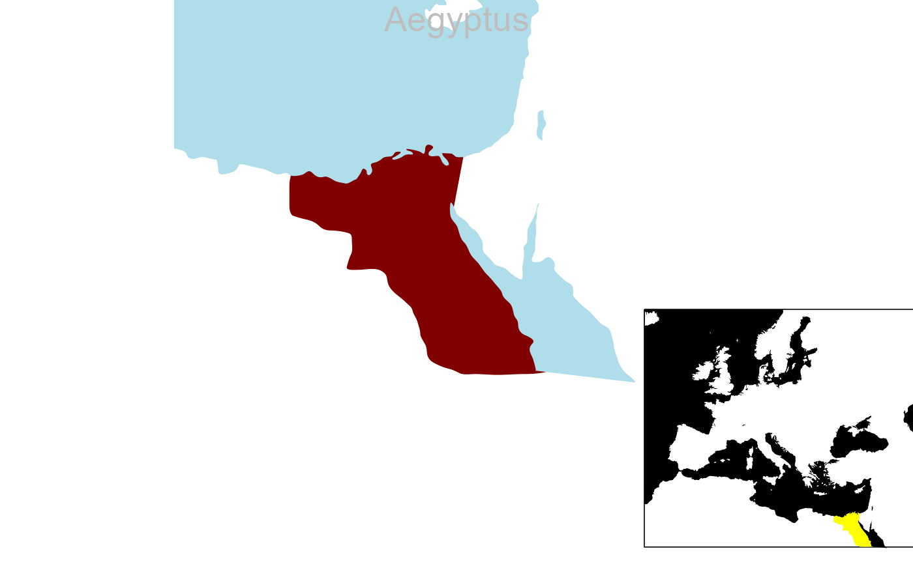
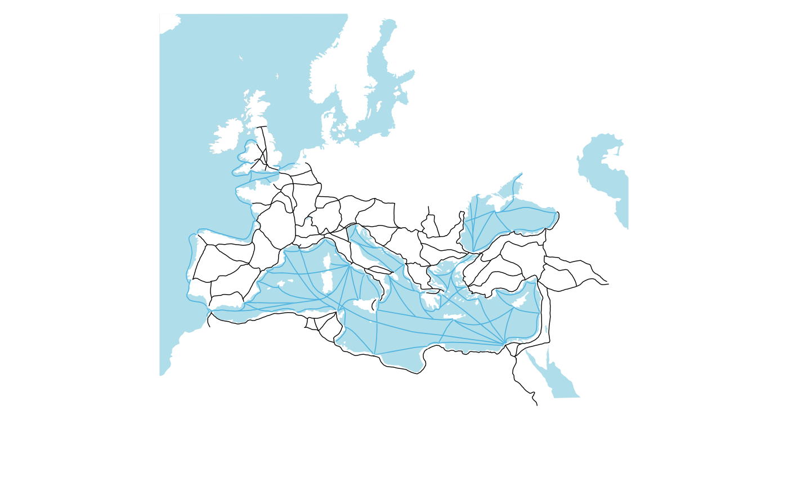

plot.map.RdA function to plot cartographical maps of the Roman world and Mediterranean region.
# S3 method for map
plot(x = NULL, type = c("plain", "rp", "si", "tetra", "med"), settl, roads, shipr,
main, cap, date, name, fsize, fcol, fsize2, fcol2, xd, yd, new, ...)
<!-- %plot.map(x = NULL, type = c("plain", "rp", "si", "tetra", "med"), settl, roads, shipr, -->
<!-- % main, cap, date, name, fsize, fcol, fsize2, fcol2, xd, yd, new, ...) -->acronym of ancient Roman province or Italian region (see "rp")
Type of cartographical map:
plain most of Europe and land around the Mediterranean
rp ancient Roman provinces
si Senatorial-Imperial provinces
tetra First Tetrarchy
med Mediterranean region
display settlements? (optional and logical, for cartographical map)
display terrestrial routes? (optional and logical, for cartographical map)
display shipping routes? (optional and logical, for cartographical map)
plot's main title (optional)
display caption? (optional and logical, for provinces)
display date? (optional and logical, for provinces)
display map title name? (optional and logical, for provinces)
font size in main title (optional)
font color in main title (optional)
font size in date (optional)
font color in date (optional)
x positioning for the date (optional)
y positioning for the date (optional)
whether the plotted map has superimposed graphics (optional)
additional optional parameters
This plot function is for creating cartographical maps of ancient provinces and Italian regions of the Roman Empire around the year AD 117.
The input data x can be a character vector, but this is intended for a recording output.
By default, the argument's name and cap are set to TRUE while the date is set to FALSE;
however, the argument main prevails over name.
The type argument allows plotting cartographical maps related to the Roman Empire and the Mediterranean basin
as specified in rpmp and rpmcd datasets.
In the cartographical maps, settlements are displayed as circles while squares are for military forts, while terrestrial and maritime routes are given as solid paths with different colours.
Shapes of places and routes are specified in the retn dataset.
A plot of a cartographical map for the Roman world with a title name, and a caption with an approximate province establishment date.
Positions for caption and date are for a PDF output and the rendering may vary for browser displays.
# Roman province of Aegyptus
plot.map(x="Aeg")

# Roman Empire transport network
plot.map(roads=TRUE, shipr=TRUE)
